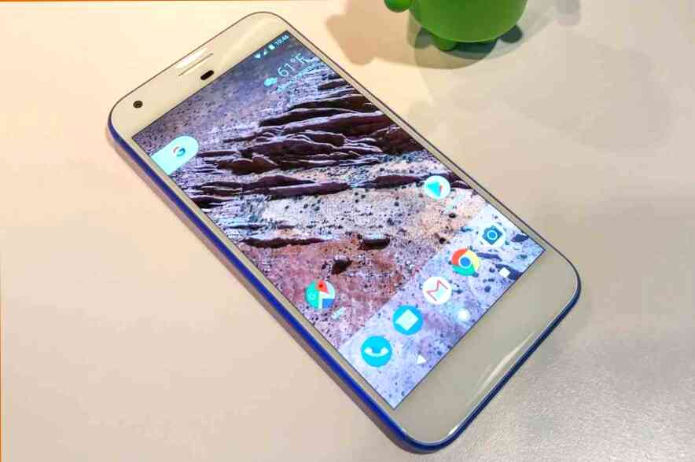

title="Laptop-ul Huawei Matebook D15 53011FPK (AMD Ryzen 5 4500U 2300 Mhz/15.6"/1920x1080/8192Mb/512Gb SSD/WIFI/Windows 10 Home)" clamp="3" data-tid="9c695045 cd58e65 44bbf2d0 cb4386dd" data-tid-prop="cd58e65 44bbf2d0 cb4386dd" target="_blank" rel="noopener" referrerpolicy="no-referrer-when-downgrade" class="_2qxWPN5 OSEwAp8 _3qvivM3 _2WzhXyE e2e-cd220adb-41a7-48b8-8767-b237a334a1a9" href="https://market.yandex.ru/offer/x-qE-YAYMDqqY_-XqH2Xqw?pp=920&clid=2396887&vid=5ed3db1ead41463b128cd224&mclid=1002&distr_type=7&hid=91013&cpc=r7WETwK0KVR_E6nl4f84hVYatrOi38Ic44xiIEON_s07h4fJ_Sj-i01f6Ko_fojROLIBAnBjsI9n65mcRI8OFvhlFvsAppybOC5lBu0gfBGcuF92Qzn4FGWD_CSapS_opJW8H_qzKuOzOCmZcFiuTA%2C%2C&lr=10854&utm_term=product_name&utm_content=models-6&utm_campaign=2396887&utm_source=market_widget&utm_medium=cpc">Laptop-ul Huawei Matebook D15 53011FPK (AMD Ryzen 5 4500U 2300 Mhz/15.6"/1920x1080/8192Mb/512Gb SSD/WIFI/Windows 10 Home) | |
_2WzhXyE e2e-cd220adb-41a7-48b8-8767-b237a334a1a9" href="https://market.yandex.ru/offer/nw3zvvIoh4m0ik7b6vRI6A?pp=920&clid=2396887&vid=5ed3db1ead41463b128cd224&mclid=1002&distr_type=7&hid=91013&cpc=x6rdVD5eP29aUQ4D33bJzJkok2MFgilhQUQYce3CNOGW5Lx0Kg1vpVgNLOP3kOQFMXK9N4iejVY5cGk-CnzPsR_ynvmbaJBWRJbWZGAq0bss0BFZSVksZ5awWtCmXFce5V0v4aXgqDpYpd5KN5K-gQ%2C%2C&lr=10854&utm_term=product_name&utm_content=models-6&utm_campaign=2396887&utm_source=market_widget&utm_medium=cpc">Laptop-ul HUAWEI MateBook D 15 AMD R5 8 GB + 256 GB | |
e2e-cd220adb-41a7-48b8-8767-b237a334a1a9" href="https://market.yandex.ru/product--noutbuk-huawei-matebook-d-14/108886680?pp=915&clid=2396887&vid=5ed3db1ead41463b128cd224&mclid=1002&distr_type=7&hid=91013&utm_term=product_name&utm_content=models-6&utm_campaign=2396887&utm_source=market_widget&utm_medium=cpc">Laptop-ul HUAWEI MateBook D 14" | |
href="https://market.yandex.ru/product--noutbuk-huawei-matebook-13/420075058?pp=915&clid=2396887&vid=5ed3db1ead41463b128cd224&mclid=1002&distr_type=7&hid=91013&utm_term=product_name&utm_content=models-6&utm_campaign=2396887&utm_source=market_widget&utm_medium=cpc">Laptop-ul HUAWEI MateBook 13 | |
href="https://market.yandex.ru/product--noutbuk-huawei-matebook-d-14-nbl-wap9r-amd-ryzen-7-3700u-2300mhz-14-1920x1080-8gb-512gb-ssd-dvd-net-amd-radeon-vega-10-wi-fi-bluetooth-windows-10-home/675106031?pp=915&clid=2396887&vid=5ed3db1ead41463b128cd224&mclid=1002&distr_type=7&hid=91013&utm_term=product_name&utm_content=models-6&utm_campaign=2396887&utm_source=market_widget&utm_medium=cpc">Laptop-ul HUAWEI MateBook D 14" NBl-WAP9R (AMD Ryzen 7 3700U 2300MHz/14"/1920x1080/8GB/512GB SSD/DVD nu/AMD Radeon Vega 10/Wi-Fi/Bluetooth/Windows 10 Home) | |
e2e-cd220adb-41a7-48b8-8767-b237a334a1a9" href="https://market.yandex.ru/product--noutbuk-huawei-matebook-x-pro/108886679?pp=915&clid=2396887&vid=5ed3db1ead41463b128cd224&mclid=1002&distr_type=7&hid=91013&utm_term=product_name&utm_content=models-6&utm_campaign=2396887&utm_source=market_widget&utm_medium=cpc">Laptop-ul HUAWEI MateBook X Pro |

După o scurtă absență Huawei revine pe piața europeană de notebook-uri cu o răzbunare. Actualizat oferta include, printre altele, Huawei Matebook D 15 (2020), care trebuie să ofere un nivel acceptabil de performanță, componente bune și de înaltă calitate de fabricație, la un preț rezonabil.
Ce oferă actualizat laptop cu nevoile pentru elevi și studenți? Perfect dacă este un laptop pentru fiecare zi? Este timpul pentru a afla!
Citește și: Review Asus ZenBook 13 UX333FA: laptop-ul cu tot ce este necesar
Caracteristici și impresii
Un procesor bun și grafică integrată, mat matrix, mai multe porturi și SSD-drive M. 2. este incontestabilă. Cu toate acestea, aici nu există nici o lumină de la tastatura, iar camera foto are o rezoluție de doar o megapiksely.
În interiorul obișnuită-o cutie de carton, fără caracteristici nu există nimic, în afară de laptop, încărcător și documente. Baterie este alcătuită din blocul de alimentare și a cablului, marea pe ambele părți de un conector USB-C, care este o soluție foarte practică, mai ales că intră în setul de baterie puteți utiliza pentru a reîncărca smartphone-uri.
Primul contact cu Matebook D 15 (2020) după extragerea din ambalaj — pozitiv. Elegant gri finisaj confera stil, de dimensiuni mici si o greutate de 1,5 kg în Interior, toate la fel de vizual atractiv, mici, cadrul din jurul ecranului creează impresia că Matebook — pare mai scump decât merită.
Recunosc, unul dintre primele ganduri care mi-a venit în cap după despachetare, a fost dorința de a-l compara cu MacBook Pro. Dar, acesta a dispărut la fel de repede cum a apărut. Și aceasta s-a întâmplat în primul rând pentru că finisaje lucioase Huawei Matebook D 15 (2020) și strălucitor gri închis lac au dezavantaje. Ei incredibilă colecție de tot felul de mici zgârieturi și amprente.
La fel de impresie proastă provoacă tastatura, confectionata din dur, neplăcut la atingere de plastic. Puteți uita de iluminat, aceasta este una dintre cele mai slabe elemente de Matebook și, din păcate, nu și ultima. Balamalele permit pune laptopul doar la poziția de 120-140 de grade, iubitorii de a viziona un film în pat vor fi dezamăgiți.
Din fericire, aparatul arata atractiv și de încredere. Aici nimic nu scartaie, nu de rupere, iar designul este destul de greu. Dacă rezuma primele impresii, va spun un singur cuvânt: medie. Mediu de până la durere.
Design și conectori
Pe capacul de la Huawei Matebook D 15 (2020) imediat vizibil numele producătorului, deși fără distinctiv logo-ul Huawei. Trei non-alunecare picioarele de jos, dintre care una trece aproape pe întreaga suprafață, și de ventilație fantele de ventilație de mari dimensiuni. Există aici și un loc pentru stereodinamikov, amplasarea lor nu cel mai bun — uita-te la un film cu sunet, care deține laptop-ul pe genunchi, nu va funcționa.
În spate, în afară de balamalei ecranului, am nu vom găsi nimic. Stânga producător postat trei porturi: USB-C, USB 3.0 și HDMI, dreapta: două USB 2.0 și un mini-conector audio de ieșire sau de microfon. De pe panoul frontal nu există nimic în afară de găuri mici, pentru două microfoane.
În interior, totul este deja atractiv — mat matrice cu rame subțiri demonstrează restrânse eleganta. Sub ea producătorul a postat logo-ul lor. Există și tastatură de mărime completă (fără zecimalelor), comutator cu built-in scanner de amprente și o mare panou touch trackpad.
Între tastele F6 și F7 s-a găsit un loc pentru web-aparat de fotografiat, care se deschide prin apăsarea tastei. Sunt foarte bucuros că soluția utilizată până în prezent în laptop premium, și anume Matebook X Pro, și-a găsit locul și în mult mai ieftin echipament.
Utilizarea tastaturii fără a zecimalelor înseamnă că stânga și dreapta sunt două mari jante de benzi. La am impresia că acest producător a vrut să sublinieze asemănările cu mult mai scump Macbook Pro. Dar, de la Macbook Pro sunt excelente (pentru laptop) difuzoare stereo laterale. Aici nu este nimic, atunci când locația de convertoare de jos — oribil.
Încărcarea Matebook D 15 se face printr-un port USB-C, prin urmare, nu există separat de intrare pentru alimentare. Din păcate, el servește numai pentru a încărca un laptop și transferul de date. Nu este vorba de reîncărcare, de exemplu, smartphone — avem nevoie de a utiliza USB 3.0. Conectarea la internet este asigurată de dvuhdiapazonnoy rapid placa de retea, are Bluetooth și NFC, care funcționează doar cu unele smartphone-uri Huawei.
De afișare și multimedia
Laptop-ul Huawei Matebook D 15 (2020) ar face bine să facă față cu acordarea de utilizator condiții confortabile de consum de conținut multimedia. Folosit aici este un panou IPS cu rezoluție Full HD. Producătorul ar trebui să fie lăudat pentru alegerea mat senzor — lipsa de reflecții îmbunătățește confortul de utilizare.
Păcat, totuși, că acest lucru este tipic de un ecran care nu este impresionant. Inițial am avut impresia că nivelul de calitate a ecranului Matebook D 15 (2020) nu este diferit de ieftine de neegalat. Dar, după un timp, m-am răzgândit — ecran de aici un pic mai buna calitate.
Amplasarea boxelor nereușită. Din fericire, dacă acestea nu sunt închise, a jucat destul de tare, iar la un nivel scăzut, chiar și plăcute la auz. Puteți uita despre basah, dar, de asemenea, nu ne putem aștepta la minuni de la un laptop la un astfel de preț. Căști este mult mai potrivita sursa de sunet, pentru a vedea următorul episod din iubitul serial de la prelegere plictisitoare. Pur și simplu conectați cu grijă căștile de la telefon inteligent, și lumea va deveni instantaneu mai interesant.
Am o veste proastă pentru cei care iubesc să se bucure de camera web. În afară de locației sale, cameră Huawei Matebook D 15 afișează persoanele de utilizatori foarte nefavorabil fel. Mi-e greu de înțeles decât condus de producător, care, în anul 2020 instalat în laptop 1-megapixeli camera web.
Confort și autonomie
Huawei Matebook D 15 (2020) funcționează foarte bine cu momentul de pornire. Datorită credibil, un scaner de amprente, el pur și simplu și instantaneu este activat. Doar o singură atingere laptop-ul pornește, amintirea unor scanat un semn pentru Windows Hello. Deblocarea calculatorului cu ajutorul amprentei funcționează excelent.
Procesor Ryzen 5 în combinație cu 8 GB de RAM și rapid hard disk oferă un confort foarte ridicat de muncă în aplicații, și atunci când navigați pe web. Puteți utiliza în condiții de siguranță pentru laptop pentru prelucrare foto, deși la editarea video, va trebui să câștige răbdare.
Tastatura pe care o am deja i-a acuzat de ieftin ca de fabricatie, lipsa numerică de bloc și de lumină, merită laude. În ciuda neajunsurilor, lucrați confortabil, rapid și fără probleme apăsând tastele corecte. Datorită acestui acest tip de majoritatea utilizatorilor de repede vor uita de neajunsurile Matebook D 15 (2020). Nimic rău eu nu pot spune si despre touchpad-ului touchpad-ul. Funcționează sigur, îndeplinind sarcinile impecabil, deși eu încerc întotdeauna să folosească mouse-ul.
Meu observațiile, stand-alone de timp-tech (navigarea pe internet, aplicații și programe, muzica de fundal) până la 5-6 ore. Este frumos, dar este demn de amintit că orice resursoemkiy proces va diminua considerabil sale. Porniți un joc pe calculator și după două ore, uita-te pentru cablu de încarcare.
Sintetice teste
Sintetice testele au înregistrat o performanță bună Huawei Matebook D 15 (2020) în programele de zi cu zi. Cu munca SSD-ului aici, de asemenea, totul este în ordine, în cele mai multe cazuri, nu există nici o penurie de RAM, deși, în cazul în care nu este puternic implicată de grafică, echipament de laptop în scădere rapidă. Ei bine, integrat sistemul oferă întotdeauna nu mai mult de un nivel acceptabil de performanță din clasa sa.
Deoarece Matebook D 15 se referă la un segment universal de laptop-uri, mi-am permis să-l testați în calculator populare jocuri.
Performanța în jocuri
Procesul de testare a constat în verificarea laptop în cinci jocuri: Farming Simulator 19, League of Legends, PUBG Lite, Fortnite și World of Tanks. Experiența se poate rezuma totul într-o singură propoziție: o surpriză pozitivă. Am jucat toate jocurile în limba maternă rezolutie senzor (1920?1080), alegerea unui astfel de grafice de configurare, pentru ca procesul a fost buna.
Deci, în cele mai multe titluri, puteți juca foarte confortabil chiar și în medii grafice setările. Aparatul este capabil de a afișa de la 50 până la 60 de cadre pe secundă pe tot parcursul jocului, ceea ce este suficient pentru a asigura buna derulare. Temperatura interna a sistemului este de aproximativ 60 de grade, deși ventilatorul nu funcționează la capacitate maximă.
League of Legends nu a fost dificil pentru Matebook. Stabile FPS de aproximativ 70 de unități. PUBG Lite este, de asemenea, fără probleme, medii de personalizare vă permit să afișați aproximativ 40 de de cadre pe secundă. Aici, cu toate acestea, pentru a menține pentru un sistem AMD temperatura dorită, ventilator dubleaza puterea, creând un sunet foarte neplăcut. Joc World of Tanks, de asemenea, a mers fără probleme. Am jucat pe medii, și complet bucurat de calitate.
La din păcate, eu nu a putut convinge laptop-ul Huawei de a lucra cu Fortnite. În ciuda extrem de mici de configurare de echipamente de încăpățânare nu a vrut să lucreze. Nu știu, problema dacă în componentele sau în software-ul, dar în Fortnite nu am putut juca.
Huawei Share la Matebook D 15
Testate Huawei Matebook D 15 (2020) este echipat cu o funcție de Huawei Share, care creează o pereche de schimb de date cu smartphone-uri și laptop-uri Huawei. Deoarece, în prezent, telefon, care folosesc în fiecare zi, este unul dintre modelele de acest producător chinez, eu cu plăcere verificat cum funcționează totul.
Pe practica este foarte plăcută plus — pur și simplu atingeți smartphone-ul laptop-ului de pe aparat vor fi asociate. În plus, funcția permite un transfer rapid de imagini și clipuri video, de a crea copii de siguranță și de a împărtăși clipboard între dispozitive. Destul de un supliment util, mai ales atunci când telefonul se încarcă, și nu vrem să ajungă la el în timp ce lucrează pe calculator.
Rezultatul
Huawei Matebook D 15 — este un universal de laptop pentru toate. Un dispozitiv care, cel mai probabil, creat pentru casă și netrebovatelynogo de utilizator. Prețul la nivelul de 45 de mii de rv (705$), un pic mai puțin decât Huawei cere Matebook D 14, oferind MULT mai mult: tastatura cu iluminare de fundal, deplierea la 180 de grade, greutate redusa, de viață a bateriei și mai mult SSD-drive. Merită să plătească în plus pentru mult mai bună configurație?
Prezentare laptop Huawei Matebook D 15 (2020) — video
Mai mult comentarii citește mai întâi pe site - ul nostru
Sursa articolului - AICI...
Lăsați un comentariu